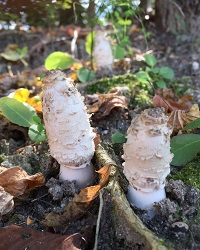

Name
Kee Taek Kim | 김기택
Education
- 2021.3 ~ : M.S. in Mathematical Science, at KAIST.
- 2015.3 ~ 2021.2: B.S. in Mathematical Science and Computer Science, at KAIST.
Research interests
Geometric Group Theory
Things I love
- Music; especially, electronic dance music.
- Rainy day
- Cute things, e.g. cats, mushrooms, ...